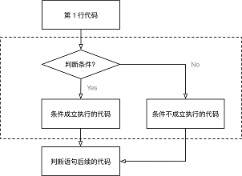

<!DOCTYPE lake>
<p data-lake-id="u59cacf4c" id="u59cacf4c"><span data-lake-id="u5a477ba5" id="u5a477ba5">先看一段代码:</span></p><span class="yuque-card-unsupported">[codeblock]</span><p data-lake-id="u02c9eff1" id="u02c9eff1"><span data-lake-id="u790dc0ad" id="u790dc0ad">这段程序无论怎么执行，结果都是一样的。我们希望程序根据不同的场景能够有不同的执行结果,就需要用到条件控制语句</span><code data-lake-id="u39197d6c" id="u39197d6c"><span data-lake-id="ufeada594" id="ufeada594">if</span></code></p><p data-lake-id="u202be2a8" id="u202be2a8"><span data-lake-id="uddd7e621" id="uddd7e621">程序满足特定的条件才能执行特定的代码，条件控制语句使用</span><code data-lake-id="u9ce5d787" id="u9ce5d787"><span data-lake-id="u8cf10564" id="u8cf10564">if</span></code><span data-lake-id="ua53cd726" id="ua53cd726">关键字，</span><code data-lake-id="ube03808e" id="ube03808e"><span data-lake-id="u789bbd1d" id="u789bbd1d">if</span></code><span data-lake-id="u68de9533" id="u68de9533">语句的结构如下:</span></p><p data-lake-id="u51fb9d34" id="u51fb9d34"></p><h2 data-lake-id="OfiyG" data-lake-index-type="2" id="OfiyG"><span data-lake-id="u743eadf2" id="u743eadf2">if 语句</span></h2><p data-lake-id="ud4a0dc73" id="ud4a0dc73"><span data-lake-id="u37b32233" id="u37b32233">if语句格式：</span></p><span class="yuque-card-unsupported">[codeblock]</span><p data-lake-id="u30152069" id="u30152069"><span data-lake-id="ub5a907f2" id="ub5a907f2">判断年龄</span></p><blockquote class="lake-alert lake-alert-info" data-lake-id="u41ea8b5c" id="u41ea8b5c"><p data-lake-id="u14ddcd67" id="u14ddcd67"><span data-lake-id="u9d2b0adf" id="u9d2b0adf">需求：</span></p><ol list="u73ba2187"><li data-lake-id="u2a427480" fid="ue12d3584" id="u2a427480"><span data-lake-id="ud1d24836" id="ud1d24836">定义一个整数变量记录年龄</span></li><li data-lake-id="ub1d1460d" fid="ue12d3584" id="ub1d1460d"><span data-lake-id="uc95ed77a" id="uc95ed77a">判断是否满 18 岁 （&gt;=）</span></li><li data-lake-id="u11e5117b" fid="ue12d3584" id="u11e5117b"><span data-lake-id="u48da0daa" id="u48da0daa">如果满 18 岁，允许进网吧嗨皮</span></li></ol></blockquote><p data-lake-id="ufaca74a3" id="ufaca74a3"><span data-lake-id="udab8da58" id="udab8da58">代码如下:</span></p><span class="yuque-card-unsupported">[codeblock]</span><blockquote class="lake-alert lake-alert-warning" data-lake-id="u0d2ea3c4" id="u0d2ea3c4"><p data-lake-id="ucbdac5a5" id="ucbdac5a5"><span data-lake-id="ued86e0da" id="ued86e0da">注意：Python中没有大括号</span><code data-lake-id="u122c4f76" id="u122c4f76"><span data-lake-id="u9dc9e6c9" id="u9dc9e6c9">{}</span></code><span data-lake-id="u79d368a7" id="u79d368a7">，通过缩进代表作用域</span></p></blockquote><h2 data-lake-id="bGjzM" data-lake-index-type="2" id="bGjzM"><span data-lake-id="u3faee3c9" id="u3faee3c9">if...else...语句</span></h2><p data-lake-id="u1cab79dd" id="u1cab79dd"><span data-lake-id="u6a319ca8" id="u6a319ca8">有些情况我们希望满足条件执行相应的代码，不满足条件执行其他的代码，这就需要用到</span><code data-lake-id="uea205e4e" id="uea205e4e"><span data-lake-id="u97df14a8" id="u97df14a8">if else</span></code><span data-lake-id="u8e845b40" id="u8e845b40">语句</span></p><p data-lake-id="u4dde93f8" id="u4dde93f8"><code data-lake-id="u841e07fe" id="u841e07fe"><span data-lake-id="u63ca0847" id="u63ca0847">if ... else...</span></code><span data-lake-id="u892952f8" id="u892952f8">语句格式</span></p><span class="yuque-card-unsupported">[codeblock]</span><p data-lake-id="u28a2cc5d" id="u28a2cc5d"><span data-lake-id="u2fd70faf" id="u2fd70faf">判断年龄</span></p><blockquote class="lake-alert lake-alert-info" data-lake-id="uf141019f" id="uf141019f"><p data-lake-id="u90a7be4f" id="u90a7be4f"><span data-lake-id="ucd2bafeb" id="ucd2bafeb">需求：</span></p><ol list="u8d6449e7"><li data-lake-id="uc635ce83" fid="u15f03dd2" id="uc635ce83"><span data-lake-id="u5f2207b2" id="u5f2207b2">输入用户年龄</span></li><li data-lake-id="ue412d3ee" fid="u15f03dd2" id="ue412d3ee"><span data-lake-id="uaa724ba1" id="uaa724ba1">判断是否满 18 岁 （&gt;=）</span></li><li data-lake-id="u042f033a" fid="u15f03dd2" id="u042f033a"><span data-lake-id="ud7f4a2e6" id="ud7f4a2e6">如果满 18 岁，允许进网吧嗨皮</span></li><li data-lake-id="u6ba05d0e" fid="u15f03dd2" id="u6ba05d0e"><span data-lake-id="uc22c57dd" id="uc22c57dd">否则（未满 18 岁），提示回家写作业</span></li></ol></blockquote><p data-lake-id="u9918b70d" id="u9918b70d"><span data-lake-id="u8e15563a" id="u8e15563a">代码如下:</span></p><span class="yuque-card-unsupported">[codeblock]</span><h2 data-lake-id="yIHC7" data-lake-index-type="2" id="yIHC7"><span data-lake-id="ua93e0f01" id="ua93e0f01">if ...elif... else语句</span></h2><p data-lake-id="u62b5d1be" id="u62b5d1be"><span data-lake-id="u1f2002ed" id="u1f2002ed">一对 if 和 else 可以让代码执行出 两种不同的结果<br/></span><span data-lake-id="u2b1061e6" id="u2b1061e6">但开发中，可能希望 并列的执行出多种结果，这时就可以使用 </span><code data-lake-id="u1fc1a40c" id="u1fc1a40c"><span data-lake-id="uc380002f" id="uc380002f">elif</span></code></p><p data-lake-id="uc8c5bc42" id="uc8c5bc42"><code data-lake-id="uc8e7603f" id="uc8e7603f"><span data-lake-id="u6e5c6c53" id="u6e5c6c53">if ...elif... else</span></code><span data-lake-id="ue61be0f9" id="ue61be0f9">格式</span></p><span class="yuque-card-unsupported">[codeblock]</span><p data-lake-id="u83ee765e" id="u83ee765e"><span data-lake-id="u34a7618a" id="u34a7618a">节日活动判定</span></p><blockquote class="lake-alert lake-alert-info" data-lake-id="u07c5113b" id="u07c5113b"><p data-lake-id="u5343c170" id="u5343c170"><span data-lake-id="u31a74d66" id="u31a74d66">需求：</span></p><ol list="u979d8770"><li data-lake-id="uc9b7cc8d" fid="ufc5f036d" id="uc9b7cc8d"><span data-lake-id="u390290a1" id="u390290a1">定义 </span><code data-lake-id="u3954b8c9" id="u3954b8c9"><span data-lake-id="ue9559672" id="ue9559672">holiday_name</span></code><span data-lake-id="u2b31bb11" id="u2b31bb11"> 字符串变量记录节日名称</span></li><li data-lake-id="u61a680be" fid="ufc5f036d" id="u61a680be"><span data-lake-id="u2bb0614e" id="u2bb0614e">如果是 情人节，应该 买玫瑰／看电影</span></li><li data-lake-id="u344f580d" fid="ufc5f036d" id="u344f580d"><span data-lake-id="u8a21a668" id="u8a21a668">如果是 平安夜，应该 买苹果／吃大餐</span></li><li data-lake-id="u9ae9a894" fid="ufc5f036d" id="u9ae9a894"><span data-lake-id="ubaa2f0ab" id="ubaa2f0ab">如果是 生日，应该 买蛋糕</span></li><li data-lake-id="u0c3164b0" fid="ufc5f036d" id="u0c3164b0"><span data-lake-id="u6b1a0cfa" id="u6b1a0cfa">其他的日子，每天都是节日……</span></li></ol></blockquote><p data-lake-id="u6944d758" id="u6944d758"><span data-lake-id="u6f406f9d" id="u6f406f9d">代码:</span></p><span class="yuque-card-unsupported">[codeblock]</span><h2 data-lake-id="Vm3xj" data-lake-index-type="2" id="Vm3xj"><span data-lake-id="ua7d52560" id="ua7d52560">火车站安检-if嵌套</span></h2><p data-lake-id="u7edf39a9" id="u7edf39a9"><span data-lake-id="ub1c77237" id="ub1c77237">在开发中，使用 if 进行条件判断，如果希望 在条件成立的执行语句中 再 增加条件判断，就可以使用 if 的嵌套<br/></span><span data-lake-id="u8d3142c9" id="u8d3142c9">if 的嵌套 的应用场景是：在之前条件满足的前提下，再增加额外的判断<br/></span><span data-lake-id="u63a2179a" id="u63a2179a">if 的嵌套 的语法格式，除了缩进之外 和之前的没有区别</span></p><blockquote class="lake-alert lake-alert-info" data-lake-id="uc6999404" id="uc6999404"><p data-lake-id="u3cc4e2b0" id="u3cc4e2b0"><span data-lake-id="u4645a206" id="u4645a206">需求：</span></p><ol list="uf672b5ce"><li data-lake-id="uc82c4ae5" fid="ua6c0d915" id="uc82c4ae5"><span data-lake-id="ue27ed1c1" id="ue27ed1c1">定义布尔型变量 </span><code data-lake-id="ua1e6da68" id="ua1e6da68"><span data-lake-id="u7469e870" id="u7469e870">has_ticket</span></code><span data-lake-id="ud6fad9a0" id="ud6fad9a0"> 表示是否有车票</span></li><li data-lake-id="uad63c7c8" fid="ua6c0d915" id="uad63c7c8"><span data-lake-id="uaa8a7648" id="uaa8a7648">定义整型变量 </span><code data-lake-id="u42713389" id="u42713389"><span data-lake-id="ud595f85c" id="ud595f85c">knife_length</span></code><span data-lake-id="u032df765" id="u032df765"> 表示刀的长度，单位：厘米</span></li><li data-lake-id="u22489de5" fid="ua6c0d915" id="u22489de5"><span data-lake-id="u185b08a6" id="u185b08a6">首先检查是否有车票，如果有，才允许进行 安检</span></li><li data-lake-id="uc13a07e6" fid="ua6c0d915" id="uc13a07e6"><span data-lake-id="u0366ede6" id="u0366ede6">安检时，需要检查刀的长度，</span></li><li data-lake-id="u516ee036" fid="ua6c0d915" id="u516ee036"><span data-lake-id="u2a37620e" id="u2a37620e">判断是否超过 20 厘米</span></li></ol><ol data-lake-indent="1" list="uf672b5ce"><li data-lake-id="u88fa3afb" fid="ua6c0d915" id="u88fa3afb"><span data-lake-id="u17b5c3d8" id="u17b5c3d8">如果超过 20 厘米，提示刀的长度，不允许上车</span></li><li data-lake-id="u0fc56ca5" fid="ua6c0d915" id="u0fc56ca5"><span data-lake-id="ua1b5999b" id="ua1b5999b">如果不超过 20 厘米，安检通过</span></li></ol><ol list="uf672b5ce" start="6"><li data-lake-id="udd3ffcf3" fid="ua6c0d915" id="udd3ffcf3"><span data-lake-id="u79e89a5d" id="u79e89a5d">如果没有车票，不允许进门</span></li></ol></blockquote><p data-lake-id="ua4db60ef" id="ua4db60ef"><span data-lake-id="u039e24ed" id="u039e24ed">代码如下:</span></p><span class="yuque-card-unsupported">[codeblock]</span><p data-lake-id="ua4f9c9b8" id="ua4f9c9b8"><br/></p><p data-lake-id="uec2fc5f5" id="uec2fc5f5"><strong><span data-lake-id="u45fe5dc3" id="u45fe5dc3">扩展知识：</span></strong></p><blockquote class="lake-alert lake-alert-success" data-lake-id="u9d835e28" id="u9d835e28"><p data-lake-id="ucc556462" id="ucc556462"><code data-lake-id="u36e6fbd4" id="u36e6fbd4"><span data-lake-id="u4b404d59" id="u4b404d59">eval()</span></code><span data-lake-id="uc54d8690" id="uc54d8690">函数的作用是将一个字符串当作Python代码进行解析和执行。它接受一个字符串作为参数，并将该字符串解析为一个表达式，并返回表达式的计算结果。</span></p></blockquote><span class="yuque-card-unsupported">[codeblock]</span><blockquote class="lake-alert lake-alert-success" data-lake-id="uf2bd8119" id="uf2bd8119"><p data-lake-id="u3e354869" id="u3e354869"><span data-lake-id="ub2674b02" id="ub2674b02">需要注意的是，由于</span><code data-lake-id="u35fcf4d6" id="u35fcf4d6"><span data-lake-id="u2c4f7a75" id="u2c4f7a75">eval()</span></code><span data-lake-id="ufa7f1949" id="ufa7f1949">函数的功能是执行字符串中的代码，它可能会带来一些安全风险。如果接受用户输入作为</span><code data-lake-id="u4034047b" id="u4034047b"><span data-lake-id="ua0e4606a" id="ua0e4606a">eval()</span></code><span data-lake-id="u3ec9f330" id="u3ec9f330">函数的参数，请确保对输入进行验证和过滤，以防止恶意代码执行或潜在的安全漏洞。在使用</span><code data-lake-id="u18427faa" id="u18427faa"><span data-lake-id="uefd3c92a" id="uefd3c92a">eval()</span></code><span data-lake-id="u5e102c4f" id="u5e102c4f">函数时要谨慎，并确保只执行可信任的代码。</span></p></blockquote><p data-lake-id="u701383ca" id="u701383ca"><br/></p><h2 data-lake-id="zG6na" data-lake-index-type="2" id="zG6na"><span data-lake-id="u6ae7b890" id="u6ae7b890">练习-石头剪刀布</span></h2><h3 data-lake-id="qIu9N" data-lake-index-type="2" id="qIu9N"><span data-lake-id="u314a5878" id="u314a5878">需求</span></h3><blockquote class="lake-alert lake-alert-info" data-lake-id="u7580f1a6" id="u7580f1a6"><p data-lake-id="u042b074c" id="u042b074c"><span data-lake-id="ub025e250" id="ub025e250">需求：</span></p><ol list="u541b2ee2"><li data-lake-id="u7675313f" fid="u200eb18a" id="u7675313f"><span data-lake-id="u9a5df52d" id="u9a5df52d">从控制台输入要出的拳 —— 石头（1）／剪刀（2）／布（3）</span></li><li data-lake-id="ub9f6c711" fid="u200eb18a" id="ub9f6c711"><span data-lake-id="u84084834" id="u84084834">电脑 随机 出拳 —— 先假定电脑只会出石头，完成整体代码功能</span></li><li data-lake-id="u512d037a" fid="u200eb18a" id="u512d037a"><span data-lake-id="u8d7cc1d5" id="u8d7cc1d5">比较胜负并输出结果</span></li></ol></blockquote><table class="lake-table" data-lake-id="w7FxQ" id="w7FxQ" margin="true" style="width: 274px"><colgroup><col width="78"/><col width="196"/></colgroup><tbody><tr data-lake-id="u3ab794e3" id="u3ab794e3"><td data-lake-id="uc4decc95" id="uc4decc95"><p data-lake-id="u9dcf34d1" id="u9dcf34d1" style="text-align: center"><strong><span data-lake-id="uae200364" id="uae200364">序号</span></strong></p></td><td data-lake-id="u697e05c1" id="u697e05c1"><p data-lake-id="u40735c85" id="u40735c85" style="text-align: center"><strong><span data-lake-id="uca91c73b" id="uca91c73b">规则</span></strong></p></td></tr><tr data-lake-id="u22527db8" id="u22527db8"><td data-lake-id="u10111737" id="u10111737"><p data-lake-id="ua1eb9a0d" id="ua1eb9a0d" style="text-align: center"><span data-lake-id="uc7d00a60" id="uc7d00a60">1</span></p></td><td data-lake-id="u370a8d8d" id="u370a8d8d"><p data-lake-id="ubf9f801e" id="ubf9f801e" style="text-align: center"><span data-lake-id="u4ff15861" id="u4ff15861">石头1胜剪刀2</span></p></td></tr><tr data-lake-id="u4842937b" id="u4842937b"><td data-lake-id="uba1f36ad" id="uba1f36ad"><p data-lake-id="u4b5720d0" id="u4b5720d0" style="text-align: center"><span data-lake-id="u17a7b3e7" id="u17a7b3e7">2</span></p></td><td data-lake-id="ueaf4ee5c" id="ueaf4ee5c"><p data-lake-id="u9c10f3f8" id="u9c10f3f8" style="text-align: center"><span data-lake-id="u89420dc0" id="u89420dc0">剪刀2胜布3</span></p></td></tr><tr data-lake-id="u6ae952c1" id="u6ae952c1"><td data-lake-id="u99517bd1" id="u99517bd1"><p data-lake-id="u8a198cf6" id="u8a198cf6" style="text-align: center"><span data-lake-id="u902c4762" id="u902c4762">3</span></p></td><td data-lake-id="uf56f59ec" id="uf56f59ec"><p data-lake-id="u429c0ee8" id="u429c0ee8" style="text-align: center"><span data-lake-id="u316e7d20" id="u316e7d20">布胜3石头1</span></p></td></tr></tbody></table><h3 data-lake-id="Gig9g" data-lake-index-type="2" id="Gig9g"><span data-lake-id="u51782e62" id="u51782e62">分析</span></h3><p data-lake-id="ub7c8bbcd" id="ub7c8bbcd"><span data-lake-id="u8ba26275" id="u8ba26275">可以先将问题简化，假设电脑出一个固定的比如石头</span></p><p data-lake-id="u4d396adb" id="u4d396adb"><span data-lake-id="u3eb9f092" id="u3eb9f092">完善程序后再添加电脑随机出拳功能</span></p><span class="yuque-card-unsupported">[codeblock]</span><h3 data-lake-id="oNZto" data-lake-index-type="2" id="oNZto"><span data-lake-id="u1e92478b" id="u1e92478b">实现</span></h3><p data-lake-id="u9dee8f7f" id="u9dee8f7f"><strong><span data-lake-id="u95642cbb" id="u95642cbb">电脑固定出石头1：</span></strong></p><span class="yuque-card-unsupported">[codeblock]</span><p data-lake-id="u39ab4d3a" id="u39ab4d3a"><strong><span data-lake-id="udca86e3b" id="udca86e3b">电脑随机出1、2、3：</span></strong></p><span class="yuque-card-unsupported">[codeblock]</span><blockquote class="lake-alert lake-alert-info" data-lake-id="ud728c020" id="ud728c020"><p data-lake-id="u884ae766" id="u884ae766"><span data-lake-id="uae98ccac" id="uae98ccac">获取一个范围在[1,3]的随机数:</span></p><p data-lake-id="udd114109" id="udd114109"><code data-lake-id="u3880c460" id="u3880c460"><span data-lake-id="u42072384" id="u42072384">import random</span></code></p><p data-lake-id="ucfae27b8" id="ucfae27b8"><code data-lake-id="uc77031c2" id="uc77031c2"><span data-lake-id="u23e735e5" id="u23e735e5">computer = random.randint(1, 3)</span></code></p></blockquote>